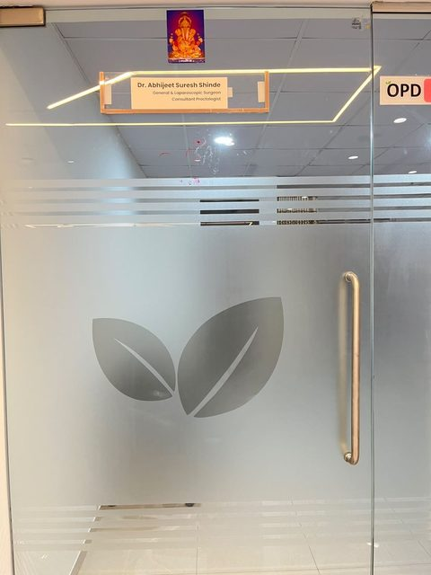
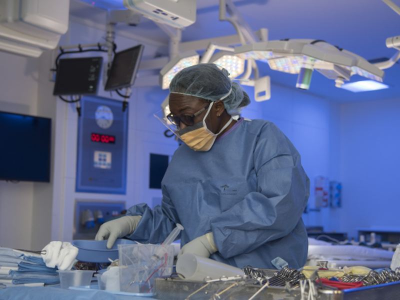

Piles (Haemorrhoids)
Bleeding, swelling or discomfort around the anus. Options range from diet and medicines to laser treatment for selected patients.
Learn MoreDisha Advanced Surgical and Laser Piles Clinic in Kharadi, Pune provides laser and laparoscopic care for piles, fissures, fistulas, hernias, gallstones and other general surgical conditions. As a surgical clinic in Kharadi, we also offer surgical evaluation and treatment planning for gastrointestinal and anorectal conditions, along with selected GI diagnostic and oncology surgical services.
Our approach to surgical treatment in Kharadi is simple: examine carefully, explain clearly, and recommend surgery only when it is needed. Consultations are private and unhurried, and options, recovery and fees are discussed before any decision.



General & Laparoscopic Surgeon | Consultant Proctologist
=======General & Laparoscopic Surgeon | Consultant Proctologist
>>>>>>> a7c86007fe092ddce12095f9bf133bcc3f7cc680Dr. Shinde sees patients at our Kharadi clinic for general surgery, laparoscopic surgery and proctology, with a special focus on piles, fissures, fistulas and other anorectal disorders.
Seven areas of surgical care. Each has its own page covering symptoms, causes, treatment options and recovery.
Bleeding, swelling or discomfort around the anus. Options range from diet and medicines to laser treatment for selected patients.
Learn More
A tear in the anal lining causing sharp pain with stools. Many heal with care; chronic cases may need a procedure.
Learn More
An abnormal tunnel near the anus with repeated discharge or swelling. It rarely heals on its own and needs assessment.
Learn More
A painful, sometimes discharging sinus near the tailbone. Treatment depends on infection and recurrence.
Learn More
A bulge in the groin or abdominal wall. Surgery is the definitive treatment, and laparoscopic repair suits some patients.
Learn More
Appendicitis causes abdominal pain that can worsen quickly. It needs prompt surgical evaluation.
Learn More
Gallstones can cause repeated upper-abdominal pain. Laparoscopic gallbladder surgery is the usual treatment for symptomatic stones.
Learn MoreMessage or call our clinic team and ask about a consultation with the surgeon. We are open daily, 10:00 AM – 9:00 PM.
Message or call our clinic team and ask about a consultation with the surgeon.
Laser and laparoscopic techniques can suit some surgical conditions, but no single method suits every patient. At our laser surgery clinic in Kharadi, the technique is chosen after examination.
Laser energy may be used for selected piles, fissures and fistulas. It is not needed for every patient, and early piles or fresh fissures often improve with medicines and lifestyle changes.
Gallbladder removal, appendix surgery and some hernia repairs can be done through small incisions using a camera.
You are examined and advised by the surgeon at your first visit.
MS (General Surgery), Diploma in Laser Proctology and proctology training in Pune.
Sensitive conditions are discussed in a private, respectful setting.
Options, recovery and fees are explained before treatment is decided.
Examination, tests only if needed, and a written plan.
Near Manipal Hospital, Thite Nagar, Kharadi, Pune.
Symptoms overlap between conditions, and some serious problems look like minor ones. Use this as a guide to when an examination is sensible, not to diagnose yourself.
Symptoms: bleeding during stools, discomfort, itching and swelling.
Piles treatmentSymptoms: pain and bleeding during or after bowel movements.
Fissure treatmentSymptoms: persistent discharge, pain and swelling near the anus.
Fistula treatmentSymptoms: pain, swelling and discharge near the tailbone.
Pilonidal sinus treatmentSymptoms: a bulge, discomfort or pain in the groin or abdomen, often more noticeable on coughing or standing.
Hernia treatmentSymptoms: abdominal pain that often begins near the navel and shifts to the lower right, sometimes with nausea, vomiting or fever.
Appendix treatmentSymptoms: upper-abdominal pain, often after fatty meals, with nausea, bloating or indigestion.
Gallstone treatmentSee a general surgeon when a problem in the abdomen, groin or anorectal area lasts more than a few days, keeps coming back, or is getting worse, or when your doctor has advised a surgical opinion.
Bleeding, pain, swelling or repeated discharge around the anus or tailbone, a bulge or pain in the groin or abdomen, and upper-abdominal pain after fatty meals or abdominal pain that shifts to the lower right all deserve an examination.
Gallbladder removal, appendix surgery and some hernia repairs can be done through small incisions using a camera. Whether it suits you depends on your condition, age, health and the stage of the problem, and is decided after examination.
Laser energy may be used for selected piles, fissures and fistulas. It is not needed for every patient, and the technique is chosen after examination.
Not always. Early piles often improve with medicines and lifestyle changes, while some piles need a procedure. The surgeon advises after examination.
When it lasts more than a few days, keeps coming back or is getting worse. Pain that begins near the navel and shifts to the lower right, or repeated upper-abdominal pain after fatty meals, needs prompt evaluation.
You describe your symptoms privately to the surgeon.
Careful examination to understand the problem.
Tests only if they are needed.
Suitable options, benefits, risks and fees are discussed.
Planned surgery, as daycare where it is safe for you.
Recovery guidance and review visits.
What patients have written about their visit to our clinic in Kharadi, Pune, shown as posted on Google.
[Paste a real Google review here, exactly as the patient wrote it.]
Posted on Google[Paste a real Google review here, exactly as the patient wrote it.]
Posted on Google[Paste a real Google review here, exactly as the patient wrote it.]
Posted on GoogleOur surgical clinic is on the 1st floor of Ganga Altus in Thite Nagar, close to Manipal Hospital. Use the map to plan your route, and call or message us if you need help finding the building.
Disha Advanced Surgical and Laser Piles Clinic
1st Floor, OPD No. 2, Survey No. 22/2, Ganga Altus, F Building, Cherry Life, Near Manipal Hospital, Thite Nagar, Kharadi, Pune, Maharashtra 411014
Phone: +91 97668 15782
Patients also visit from Wagholi, Viman Nagar, Hadapsar, Mundhwa and Magarpatta.
Check the surgeon’s medical registration number and recognised qualifications, ask whether the surgeon will examine you personally, and make sure options, risks and fees are explained clearly before you agree to any treatment. Dr. Abhijeet Suresh Shinde’s qualifications are listed on this page.
You describe your symptoms privately to the surgeon, who examines you carefully, advises tests only if they are needed, and discusses suitable options, benefits, risks and fees, with a written plan.
Yes. Laser energy may be used for selected piles, fissures and fistulas at our Kharadi clinic. It is not needed for every patient, and the technique is chosen after examination.
A fissure is a tear in the anal lining that causes sharp pain with stools. Piles cause bleeding, swelling or discomfort around the anus. Symptoms overlap, so an examination is the reliable way to tell them apart.
A fistula is an abnormal tunnel near the anus with repeated discharge or swelling. It rarely heals on its own and needs assessment.
Surgery is the definitive treatment for a hernia, and laparoscopic repair suits some patients. The surgeon will advise on timing and technique after examination.
Laparoscopic (keyhole) surgery is done through small incisions using a camera. Gallbladder removal, appendix surgery and some hernia repairs can be done this way.
Daycare surgery (same-day discharge) is planned where clinically appropriate. Some patients need a longer stay.
We are on the 1st Floor, OPD No. 2, Ganga Altus, F Building, Cherry Life, near Manipal Hospital, Thite Nagar, Kharadi, Pune. Call or WhatsApp +91 97668 15782, or use the Book an Appointment button.
Options, recovery and fees are explained before treatment is decided. Please call or WhatsApp the clinic on +91 97668 15782 for the current consultation fee.
This information is educational and is not a substitute for a personal medical examination. Outcomes vary between patients.
Talk to our surgeon today. Honest advice, no pressure.